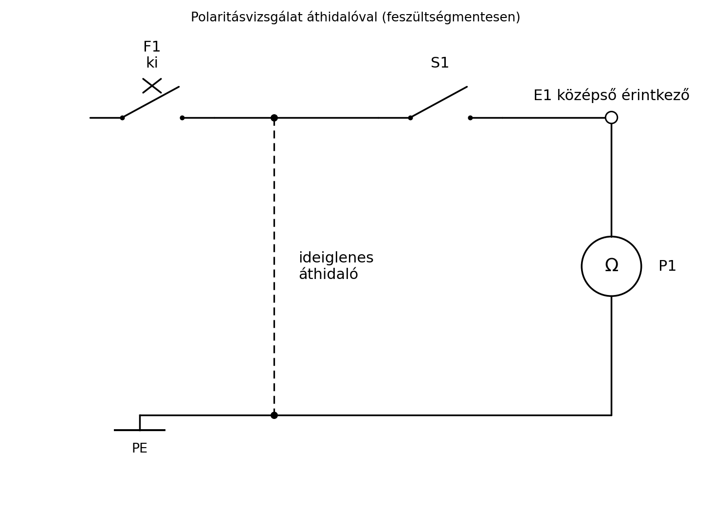

![Folyamatábra két oszlopban. Bal oszlop, kikapcsolt állapot: 1 dokumentáció, 2 öt szabály, 3 szemrevételezés, döntés: életveszélyes hiba? (igen: nem helyezhető feszültség alá, javítás, vissza a 3-ra), 4 PE- és EPH-folytonosság, döntés: R_PE megfelel? (nem: javítás, ismétlés), 5 fogyasztók leválasztása, 6 szigetelési ellenállás, döntés: R_iso ≥ határérték? (nem: hibahely-keresés felezéssel), 7 polaritás, 8 földelési ellenállás, feszültség alá helyezés. Vastag szaggatott határ után a jobb oszlop szürke dobozai, üzemi mérések: 9 hurokimpedancia, döntés TN vagy TT (TN: Z_s ≤ Z_s,max, TT: R_A·I_Δn ≤ 50 V), 10 FI-mérés, döntés: FI megfelel?, 11 feszültség, fázissorrend, forgásirány, 12 működési próbák, 13 jegyzőkönyv.](figures/img/ve085-3.png)
Statikus változat (mint a PDF-ben)
Az ellenőrzés nem a mérőműszer bekapcsolásával kezdődik, hanem azzal, hogy kikapcsolt állapotban, ellenőrző listával végignézed a berendezést. Sok hiba ugyanis műszerrel nem látszik, vagy éppen a mérés közben válik veszélyessé: egy meglazult PE-vezeték, egy hiányzó érvéghüvely, egy rosszul jelölt áramkör vagy egy tönkrement kábelbevezető mind kiderülhet már a szemrevételezés során.
A másik tipikus hiba az, ha a méréseket rossz sorrendben végezzük. A kikapcsolt állapotú (feszültségmentes) mérések előzik meg az üzemi, feszültség alatti méréseket. Ha ezt felcseréled, a szigetelési mérést feszültség alatt végeznéd, vagy fogyasztókat mérnél meg, ami tönkreteheti a műszert és a beépített elektronikát is.
Az alábbi folyamatábra a teljes ellenőrzés térképe: melyik lépés melyik alfejezetben részletes, és hol kell döntened, hogy továbbléphetsz-e.
A rombuszok döntési pontok: a „megfelel” ág visz tovább, a „nem felel meg” ág mindig javításra, majd ugyanannak a lépésnek a megismétlésére. „Nem felel meg” eredménnyel a sorrendben nem szabad továbblépni – különösen nem a vastag határvonalon át, a feszültség alá helyezésig. A TN- és a TT-rendszer a 9. lépés után ágazik el: TN-ben a hurokimpedancia (), TT-ben a földelési ellenállás és az FI () bizonyítja a kioldási feltételt (ellenőrizendő: MSZ HD 60364-4-41, MSZ HD 60364-6). Az interaktív változatban lépésenként végigjátszhatod a sorrendet; minden lépésnél kártya mutatja, mit mérsz, milyen műszerrel, mi az elfogadási feltétel, és melyik alfejezet tárgyalja részletesen. Kérdés: miért kerül a szigetelésmérés a folytonosságmérés után – mi történne fordított sorrendben egy szakadt PE-vezetővel?
Definíció. A kisfeszültségű villamos berendezés ellenőrzésének három alappillére:
Szabály. A vizsgálati sorrendet úgy kell megtervezni, hogy a szemrevételezés megelőzze a méréseket, és a kikapcsolt állapotú mérések megelőzzék az üzemi méréseket. Ennek oka: ha a szemrevételezés során nyilvánvaló hibát találunk, azt előbb ki kell javítani, vagy a mérési jegyzőkönyvet hibás eredménnyel vennénk fel. Ha pedig a szigetelési mérést fogyasztók alatt vagy feszültség alatt végezzük, a mérés téves lehet, és a hálózati feszültség alatt álló, fogyasztókkal terhelt áramkörök mérése balesetet is okozhat.
A kikapcsolt állapotú mérések közé tartozik elsősorban a folytonosság, a szigetelési ellenállás, a polaritás (az egypólusú kapcsolók és védelmek a fázisvezetőben vannak-e) és a földelési ellenállás mérése. Az üzemi mérések közé tartozik a hurokimpedancia, a zárlati áram és a FI-mérés. A részleteket a következő alfejezetek tárgyalják.
A szemrevételezés nem azt jelenti, hogy „ránézek, hogy szép-e”. Célja annak megállapítása, hogy a berendezés látható állapota megfelel-e a szabványos szerelési és életvédelmi követelményeknek. A következő pontokat ellenőrizzük:
Kötések, csatlakozások:
Védelmek, védő- és nullavezetők:
Jelölések, feliratok:
Szerelési mód, környezet és IP-védettség:
A szemrevételezés során jegyzőkönyvbe kell rögzíteni minden eltérést, és meg kell határozni, hogy az eltérés javítás nélkül is üzemeltethető-e, vagy azonnali javítást igénylő hibáról van szó. Ha a berendezés nyilvánvalóan életveszélyes, például nincs védővezető, feszültség alatti rész hozzáférhető, vagy a hibavédelem nem megfelelő, a berendezést nem szabad feszültség alá helyezni.
A fenti lista egy lakáselosztóban így néz ki a gyakorlatban. Az alábbi ábrán a burkolatot már levették, a főkapcsolót kikapcsolták és lakattal kizárták (1); a számok a szemrevételezés sorrendjét követik: a kötések és az érvéghüvelyek (2), a PE-sín (3) és az attól elválasztott N-sín (4), az áramkörcímkék (5), a FI adatai (6), az érszínek (7) és a kábelbevezetők (8). A 9-es és a 10-es pont két tipikus, szemmel látható hibát mutat: hőnyomot egy laza kapocs körül és a kapocsból kilógó csupasz eret.
Szemrevételezéskor a hőnyomot ne „takarítsd le”: a kapcsot feszültségmentes állapotban bontani kell, az eret visszavágni, és a hibát a jegyzőkönyvbe írni. A HTML-kiadásban az ellenőrzési pontokra mutatva megjelenik, mit és miért nézünk, és a hibák rétege ki-be kapcsolható.
Definíció. A működési próba a beépített készülékek funkcionális ellenőrzése. Nem mérés, hanem a felhasználó által is elvégezhető, biztonságos, rendeltetésszerű működtetés.
A gyakorlatban az alábbi próbákat végezzük el:
Kapcsolók, nyomógombok, fényforrások:
Áram-védőkapcsoló (FI) próbagomb:
Forgásirány, fázissorrend:
Egy elkészült motorvezérlést átadás előtt tételes működési próbával ellenőrzünk. Jelölések: S0 STOP, S1 és S2 START, K1 és K2 mágneskapcsoló, F1 hőkioldó (95–96), H1 üzemjelző lámpa.
Biztonsági korlát. A próba hálózati feszültségű vezérlőszekrényben csak jogosult, arra képesített személy felügyeletével, zárt burkolatnál, a kezelőszervekről végezhető; tanulóként törpefeszültségű vagy tanműhelyi modellen gyakorolj. Bekötést módosítani csak az öt biztonsági szabály szerinti feszültségmentesítés után szabad.
| Próba | Elvárt viselkedés | Hibás viselkedés → valószínű ok |
|---|---|---|
| 1. Vezérlőkör feszültség alatt, főkör leválasztva (motorvédő kikapcsolva vagy motor lekötve, az üzemi utasítás szerint): S1 START, majd elengedés | K1 behúz, H1 világít; elengedés után K1 meghúzva marad (önfenntartás, 13–14) | elengedéskor elenged → hiányzó vagy rossz önfenntartó ág |
| 2. S0 STOP bármely állapotban | K1 elenged | nem enged el → S0 nem bontó érintkezőre (21–22 helyett 13–14) van kötve – életveszélyes |
| 3. Vészleállító megnyomása, majd reteszoldás | K1 elenged, a gomb reteszel; S1-re nem indul; oldás után sem indul magától, csak S1-re | magától indul → hiányzik az újraindulás elleni védelem |
| 4. F1 hőkioldó „TEST” gombja, majd visszaállítás | 95–96 bont, K1 elenged; visszaállítás után nem indul magától | K1 nem enged → 95–96 nincs a vezérlőkörben; magától indul → kézi helyett automata visszaállás vagy hibás vezérlés |
| 5. Forgásirányváltás: K1 behúzva S2 | K2 nem húz be (villamos reteszelés 21–22, ha van, mechanikus is) | mindkettő behúz → hiányzó reteszelés, fázisközi zárlat veszélye |
| 6. Főkör rákapcsolása, fázissorrend, rövid indítás | a műszer jobbforgót (L1–L2–L3) jelez; a motor a kívánt irányba forog | rossz irány → két fázis cseréje a betáplálás leválasztása után (öt szabály) |
| 7. Jegyzőkönyvezés | minden próba: igen / nem, megjegyzés | hiányos sor → a próba nem igazolt |
A fázissorrend-mérő három mérőzsinórját (L1, L2, L3 színkód vagy felirat szerint) a motorleágazás fő áramkörének mérhető kapcsaira – a motorvédő vagy a mágneskapcsoló megfelelő kapocshármasára – csatlakoztatjuk; a csatlakoztatást feszültségmentesen vagy érintésbiztos mérőcsúcsokkal, a gyártó utasítása szerint végezzük. A bekötést ábrán a Motor kapocsbekötése és beüzemelése alfejezet forgásirány-ábrája mutatja; a vezérlőkapcsolások felépítését a Vezérlések építése: direkt, reverzáló, Y-Δ alfejezet.
A méréseket soha nem a mérőműszer kicipelésével kezdjük. A helyes sorrend:
Figyelem. A kikapcsolt állapotú mérések előkészítésekor minden fogyasztót, fáziskontrollert, kapcsolóüzemű tápegységet, tirisztort, LED-drivert és elektronikus előtétet le kell csatlakoztatni. A szigetelési ellenállásmérő egyenfeszültsége ezeket tönkreteheti, és a szivárgóáramuk miatt a mérési eredmény is téves lesz.
Miért? A fázisvezetőben lévő egypólusú kapcsoló kikapcsolt állásban feszültségmentesíti a lámpatestet. Ha a kapcsoló a nullát szakítja, a foglalat kikapcsolva is fázisfeszültség alatt marad – izzócserénél áramütés. Az E27 foglalat középső érintkezőjére a fázis, a menetes részre a nulla kerül; az egypólusú védelem is a fázisban van.
Vizsgálat kikapcsolt állapotban, folytonosságméréssel.
Ha ki állásban is kis értéket mérsz, a fázis a kapcsolót megkerülve jut a foglalatra: a kapcsoló a nullát szakítja, vagy L és N fel van cserélve.

Üzemi ellenőrzés. Feszültség alatt a polaritást dugaszolóaljzat-vizsgáló vagy installációs műszer polaritásjelzése mutatja (lásd Védelmi mérések gyakorlata és a jegyzőkönyv kitöltése); a fázisceruza erre sem elfogadható.
Szabvány.
A kisfeszültségű villamos berendezések ellenőrzését az MSZ HD
60364-6 sorozat tárgyalja. A szabvány megkülönbözteti az
első ellenőrzést (új, bővített vagy átalakított
berendezés) és az időszakos felülvizsgálatot. A
szemrevételezésnek és a méréseknek ki kell terjednie a védővezetőkre, a
hibavédelemre, a túláramvédelemre, a szerelvényekre, a kábelekre, a
jelölésekre és a dokumentációra. A pontos kiadás, a vizsgálati tételek
részletes felsorolása, az alkalmazott mérési módszerek és határértékek
az aktuális szabványkiadás és a formanyomtatványok szerint változhatnak.
(ellenőrizendő: aktuális szabványkiadás, jegyzőkönyv-minta
rovatai.)
A mérőműszerekre a védelmi mérésekhez az MSZ EN 61557 szerinti követelmények vonatkoznak. A szerelői gyakorlatban a mérési osztály, a pontosság és a kalibráltság a jegyzőkönyvben is megjelenik.
Ellenőrzési recept: egy áramköri csoport szemrevételezése és méréselőkészítése
A recepthez kevés, de jól megválasztott eszköz kell. Az alábbi ábra (a) része a kétpólusú feszültségvizsgálót mutatja: a kijelzőmarkolaton LED-sor jelzi a feszültség nagyságát (1), mindkét mérőcsúcson ujjvédő van (2), a két markolatot zsinór köti össze (3, 4). A doboz- és elosztóbelső bontás nélküli átnézéséhez lámpa (5) és vizsgálótükör (6) kell, a kapcsok meghúzottságát pedig 1000 V-os, kettős háromszöggel jelölt szigetelt csavarhúzóval (7, 8) ellenőrizzük – természetesen csak feszültségmentes állapotban. A lakat és a tábla (9), az ellenőrző lista (10) és a védőszemüveg (11) a biztosítás, a dokumentálás és az egyéni védelem eszköze. A fázisceruza (12) áthúzva szerepel: a feszültségmentesség ellenőrzésére nem alkalmas. Az ábra alsó sávja a recept 3. lépését bontja ki: a vizsgálót mérés előtt és után is ismert forráson próbáljuk ki.

A „próba – mérés – próba” sorrend azért fontos, mert csak így zárható ki, hogy a vizsgáló éppen mérés közben hibásodott meg, és hamis „0 V”-ot mutatott. A HTML-kiadásban az eszközcsoportok és a három lépés külön is megjeleníthető.
Továbbvitt eredmény. Ezt a receptet használjuk a Mérések I.: folytonosság, szigetelési ellenállás, földelés alfejezetben: a folytonossági és szigetelési mérést csak akkor végezzük el, ha a szemrevételezés megtörtént, a fogyasztók le vannak választva, és a feszültségmentesség ellenőrzése sikeres volt.
Egy lakás első ellenőrzéséhez az alábbi tételes lista kitölthető (nyomtatható változat: Nyomtatható jegyzőkönyvek és sablonok, A1). Minden sor mellé I (igen, megfelel), N (nem felel meg, megjegyzéssel) vagy NA (nem alkalmazható) kerül (ellenőrizendő: a hatályos formanyomtatvány tételei).
| Sz. | Ellenőrzési pont | Elfogadás (mit kell látni) | I/N/NA |
|---|---|---|---|
| A1 | egyvonalas / kapcsolási rajz | megvan, egyezik a valósággal | |
| A2 | áramkörcímkék | minden körnek egyértelmű neve | |
| A3 | FI-k, kismegszakítók adatai | a rajzon és a készüléken egyeznek | |
| A4 | korábbi jegyzőkönyv | mellékelve (új létesítésnél NA) | |
| B1 | burkolat, IP-fokozat | ép, nincs nyitott kivágás | |
| B2 | érintésvédelem az elosztóban | feszültség alatti rész nem érinthető (IP2X, ujjvédelem) | |
| B3 | PEN-szétválasztás | egy ponton, utána N és PE külön | |
| B4 | N- és PE-sín | feliratozott, körönként azonosítható | |
| B5 | kötések | meghúzva, hajlékony éren érvéghüvely | |
| B6 | fésűs sín | megfelelő típus, vége lezárva | |
| B7 | FI típusa (AC/A/F/B) | a terheléshez illik | |
| B8 | SPD állapotjelző | zöld | |
| C1 | színjelölés | L barna/fekete/szürke, N kék, PE zöld-sárga | |
| C2 | keresztmetszet és védelem | (Vezetékvédelem, koordináció) | |
| C3 | szerelési mód | a környezetnek megfelelő | |
| C4 | hajlítás, rögzítés | nem éles, rögzített, nem sérült | |
| C5 | kábelbevezetés | tömszelence vagy élvédő | |
| C6 | tűzterjedés elleni átvezetések | lezárva (ellenőrizendő) | |
| D1 | aljzatok PE-je | minden PE-kapocs bekötve | |
| D2 | egypólusú kapcsolók | a fázisban vannak | |
| D3 | E27 foglalatok | középső érintkező fázison | |
| D4 | fürdőszobai zónák | szerelvény a zónának megfelelő (EPH, FI) | |
| D5 | kültéri szerelvények | megfelelő IP, tömítés meghúzva | |
| D6 | fix fogyasztók | leválaszthatók, rögzített bekötés | |
| E1 | fő EPH | víz, gáz, fűtés, földelő bekötve | |
| E2 | kiegészítő EPH a fürdőben | az előírt helyen megvan | |
| E3 | 30 mA-es FI | aljzatkörökön és fürdőben (ellenőrizendő: MSZ HD 60364-4-41) | |
| E4 | földelő | bekötve, mérőcsatlakozó hozzáférhető | |
| E5 | PE-vezető | nincs kapcsolóval, biztosítóval megszakítva | |
| E6 | II. érintésvédelmi osztályú eszközök | nincs PE-bekötés |
Hibaosztályok (ellenőrizendő: felülvizsgálati gyakorlat, formanyomtatvány):
Tünet. Egy felújított lakás konyhai aljzatkörén a dugaszolóaljzat nem működik. A kismegszakító nem oldott ki, és a lakó szerint „a szerelő azt mondta, minden jól van”.
Hipotézis. Az áramkör nem kap feszültséget, vagy a feszültség megérkezik az aljzatig, de a csatlakozókapcsokban nincs megfelelő folytonosság. Kézenfekvő a sorkapocs-ellenőrzés.
Szemrevételezés és mérés. A felülvizsgáló először a főelosztóban azonosítja az áramkört. Kikapcsolja a csoportot, kikapcsolt állapotban ellenőrzi a feszültségmentességet. A konyhai aljzat burkolatát leemelve azt látja, hogy a fázisvezető csatlakozócsavarja alatt a sodrott rézér kilazult, a szigetelés barnás elszíneződése korábbi melegedést jelez. A sodrott eret érvéghüvely nélkül nyomták be a csavaros kapocsba. A folytonosságmérés megerősíti: a kapocs és az ér között nagy az átmeneti ellenállás.
Ok. A szerelő nem húzta meg megfelelően a csavart, és hajlékony vezetéket érvéghüvely nélkül kötött be. A lazult kötés melegedéshez, majd a csatlakozás megszakadásához vezetett.
Javítás. Feszültségmentes állapotban az eret újra méretre vágják, érvéghüvelyezik, a csavart a gyártói nyomaték-ajánlás szerint meghúzzák, majd a mérési sorrendet megismétlik: folytonosság, szigetelés, üzemi feszültségellenőrzés.
Megelőzés. A szemrevételezés során minden csatlakozó és sorkapocs tételes ellenőrzése, a hajlékony erek érvéghüvelyezése, valamint a kötések felülvizsgálata az első bekapcsolás előtt kiemelt pont.
Hiba 1: a szemrevételezést nem veszik komolyan. A szerelő csak a mérőműszerre bízza az ellenőrzést, és közben laza kötés, rossz színjelölés, hiányzó EPH vagy sérült kábelbevezető marad a berendezésben. Helyes gyakorlat: minden ellenőrzés a szemrevételezéssel kezdődik, és annak eredményét dokumentálják.
Hiba 2: a mérések sorrendjét felcserélik. Az üzemi mérést végzik el előbb, majd a kikapcsolt szigetelési mérést. A szigetelési mérés előkészítésében a fogyasztók károsodhatnak, az áramkör nyilvánvaló hibája pedig üzemi mérés közben balesetet okozhat. Helyes sorrend: szemrevételezés → kikapcsolt mérések → üzemi mérések → működési próbák.
Hiba 3: a FI próbagomb és a FI műszeres mérés összekeverése. A FI próbagomb megnyomása nem bizonyítja, hogy az áram-védőkapcsoló a névleges differencia- vagy kioldási időn belül leold. Ugyanakkor a műszeres mérés nem fedezi fel a beragadt próbagombot vagy a mechanikai hibát. Mindkét ellenőrzést el kell végezni.
Hiba 4: a feszültségmentességet fázisceruzával ellenőrzik. A fázisceruza megbízhatatlan, nem kétpólusú, és téves eredményt adhat. Helyes gyakorlat: kétpólusú feszültségvizsgálóval, lehetőleg mérés előtt ismeretes feszültségű áramkörön ellenőrizve a műszert.
Hiba 5: a jelölések hiányát nem tekintik hibának. A hiányzó vagy téves áramkörcímke, kapcsok felirata, kapcsolási rajz később hibakeresést, téves lekapcsolást, balesetet okoz. A szabványos szereléshez a jelölés ugyanúgy hozzátartozik, mint a vezetékezés.
Gyakorlás: ennek az alfejezetnek a kidolgozott példái, gyakorlatai és megoldással ellátott feladatai az Összefoglaló feladatgyűjtemény villanyszerelő tanulóknak című kötet 24.1 szakaszában találhatók.
A villamos berendezés ellenőrzése három pilléren áll: szemrevételezésen, méréseken és működési próbákon. A helyes sorrend: előbb a feszültségmentesítés és a szemrevételezés, azután a kikapcsolt állapotú mérések, majd az üzemi mérések és a működési próbák. Szemrevételezéskor a kötéseket, védelmeket, jelöléseket, szerelési módokat és a PE-vezetőt tételes listával ellenőrizzük. A FI-próbagomb a készülék mechanikus és tesztáramköri működését vizsgálja, de nem helyettesíti a műszeres FI-mérést; a forgásirányt háromfázisú fogyasztónál külön is igazolni kell. A mérések előtt a fogyasztókat le kell választani, és a feszültségmentességet kétpólusú feszültségvizsgálóval kell ellenőrizni. Továbbvitt eredmény: az ellenőrzés itt felépített sorrendjét – szemrevételezés, fogyasztók lecsatlakoztatása, kikapcsolt mérések, majd üzemi mérések – használja a Mérések I.: folytonosság, szigetelési ellenállás, földelés alfejezetben; a védelmi mérések csak ebben a sorrendben adnak megbízható, biztonságos eredményt.